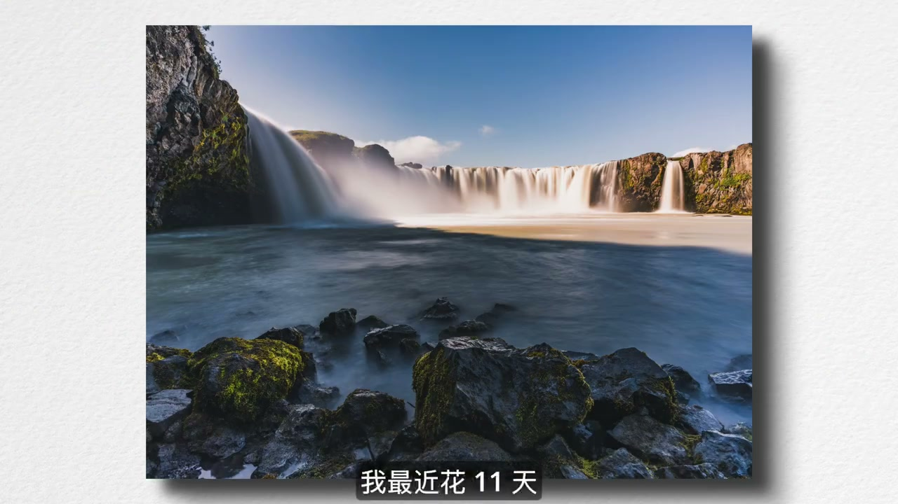
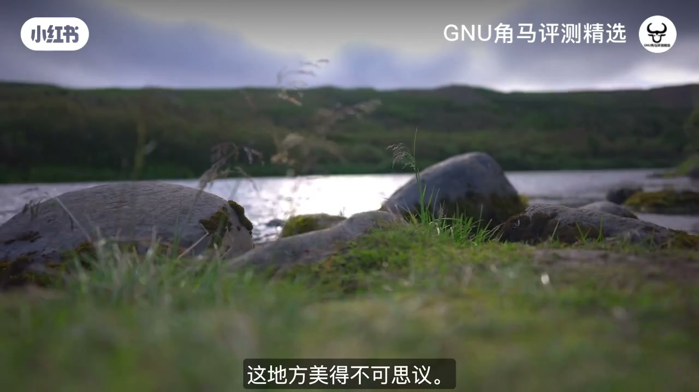
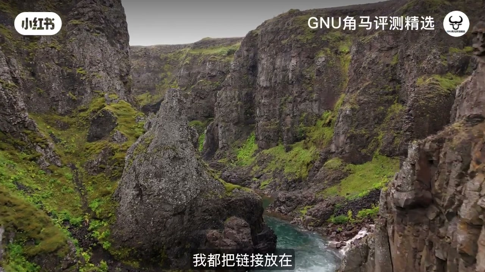
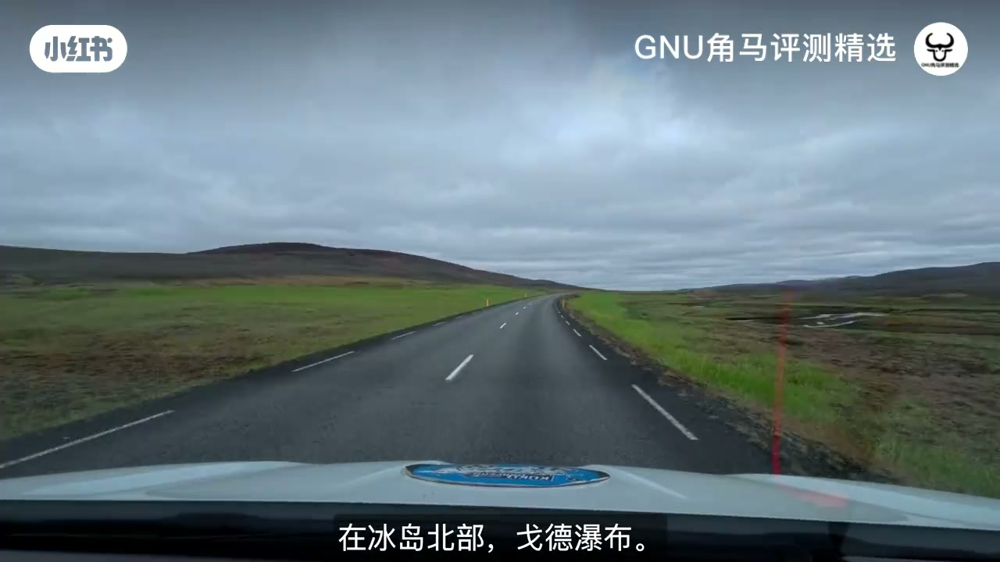
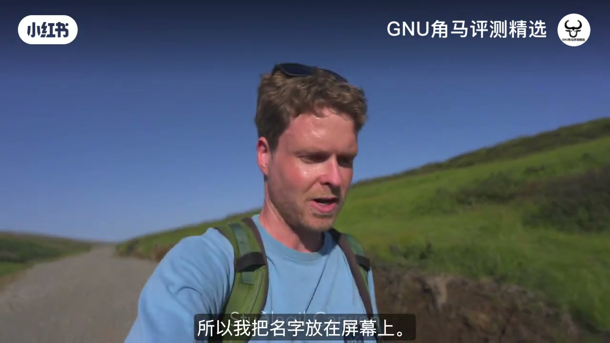
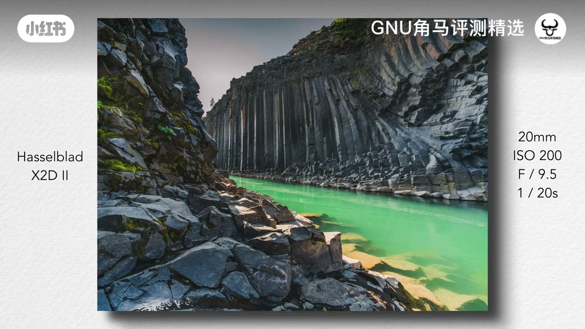
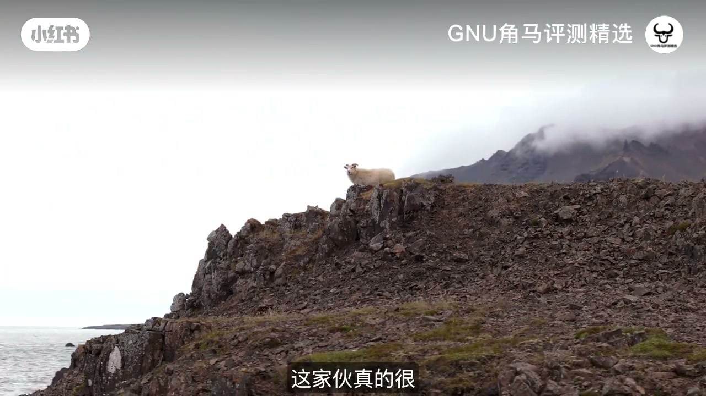
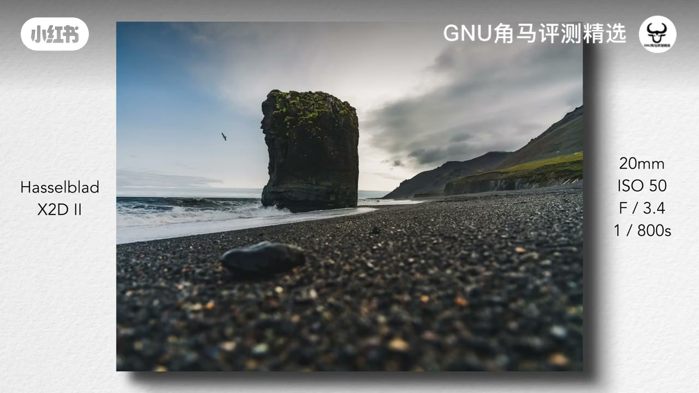
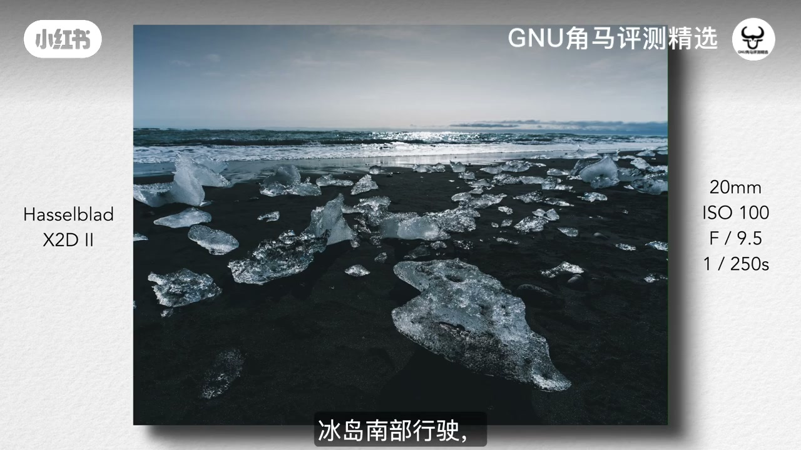
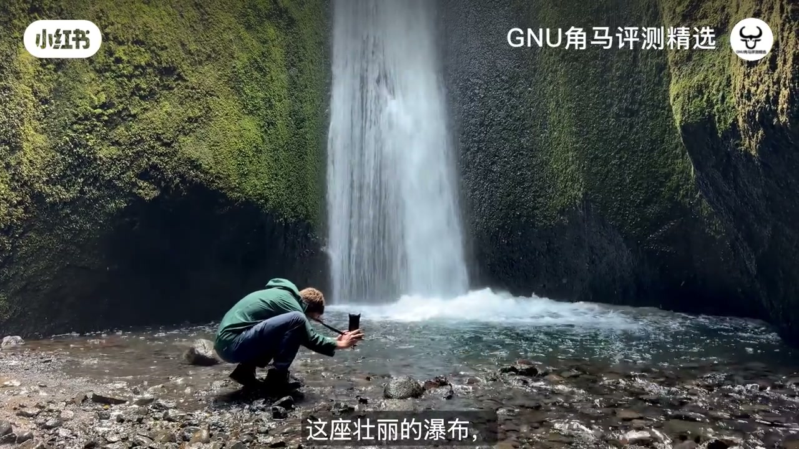

内容要点
账号「GNU角马评测精选」剪辑约八分钟英文旅拍口播：哈苏 X2D II 冰岛环岛 11 天。简介强调日全食、海鹦悬崖 1 亿像素裁切、戈德瀑布一次曝光高动态、手持 1.4 秒 IBIS、配合绵羊等。ASR 主体为英文，末段混入繁中且含糊，已在图注标明。
知识结构
[00:00→02:30]
开场与瀑布
焦点堆叠尝试；峡谷瀑布与 Godafoss+ND。
[02:30→05:00]
地热/峡谷/岩柱
玄武岩、20mm 前景、F4/F11 选择。
[05:00→07:48]
黑沙滩到维斯特拉角
绵羊、Vestrahorn 日落全景、南岸与岛屿。
总结
样片叙事：中画幅在风光慢门、高动态与裁切上的余量；地点清单见原简介。
00:00–02:30环岛开场与瀑布
作者自述携女友 Steph 与 X2D2 环游冰岛。现场尝试 focus stacking 想「一切都清晰」。第一处峡谷瀑布灰空情绪强；接着著名的北部 Godafoss，用 ND 做慢门流水，称本趟最爱之一。

[00:05] 开场：携哈苏 X2D II 与伴侣环游冰岛 11 天
Opening: 11 days around Iceland with a Hasselblad X2D II.

[01:10] 尝试焦点堆叠，想让前后景都清晰
Trying focus stacking to keep near-to-far sharp.

[01:55] 第一处峡谷瀑布：灰空情绪片，地点见简介
First canyon waterfall: moody grey skies; locations linked in the description.

[02:15] 戈德瀑布：ND 慢门流水；称本趟最爱之一
Godafoss with ND slow shutter—one of the trip favorites.
02:30–05:00地热、峡谷与玄武岩
火山岛地热带来地表纹理；徒步一处常呈蓝绿但可能因上游溢流变浑的峡谷（屏显地名）。玄武岩柱因改道露出成景点；作者用 20mm 最大视角做前景，也拍 Steph：F4 虚化，并忍不住缩到 F11 做太阳星芒。

[03:50] 火山岛地热纹理与无名峡谷徒步（屏显地名）
Geothermal textures and a hike into a sometimes-muddy canyon.

[04:25] 玄武岩柱：20mm 前景构图；F4 虚化与 F11 星芒
Basalt columns at 20mm; F4 blur and F11 sunstars.
05:00–07:48绵羊、维斯特拉角与南岸
东岸遇见「配合出片」的绵羊，下方是黑沙滩岩柱。日落时机赶到 Vestrahorn（维斯特拉角山），称其为冰岛最美山之一，并做超广全景。随后沿南岸行驶，渡轮前往西人岛（Vestmannaeyjar），称那里成为最爱之一。末段中文混杂 ASR 不清，画面为瀑布短徒步收尾。

[04:50] 东岸「霸气绵羊」与黑沙滩岩柱
A cooperative sheep above a black-sand beach with sea stacks.

[05:05] 维斯特拉角山日落：称冰岛最美山之一，超广全景
Vestrahorn at sunset—ultra-wide panorama of a favorite mountain.

[05:55] 南岸续行并渡轮西人岛；后段称最爱之地之一
South coast and ferry to the Westman Islands.

[07:10] 收尾瀑布短徒步；中文混入段落听不清，以画面为准
Closing waterfall hike; late Chinese ASR is unclear—trust the picture.